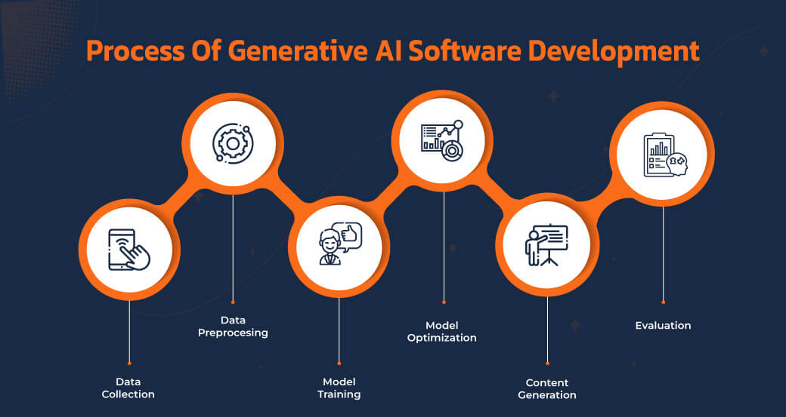
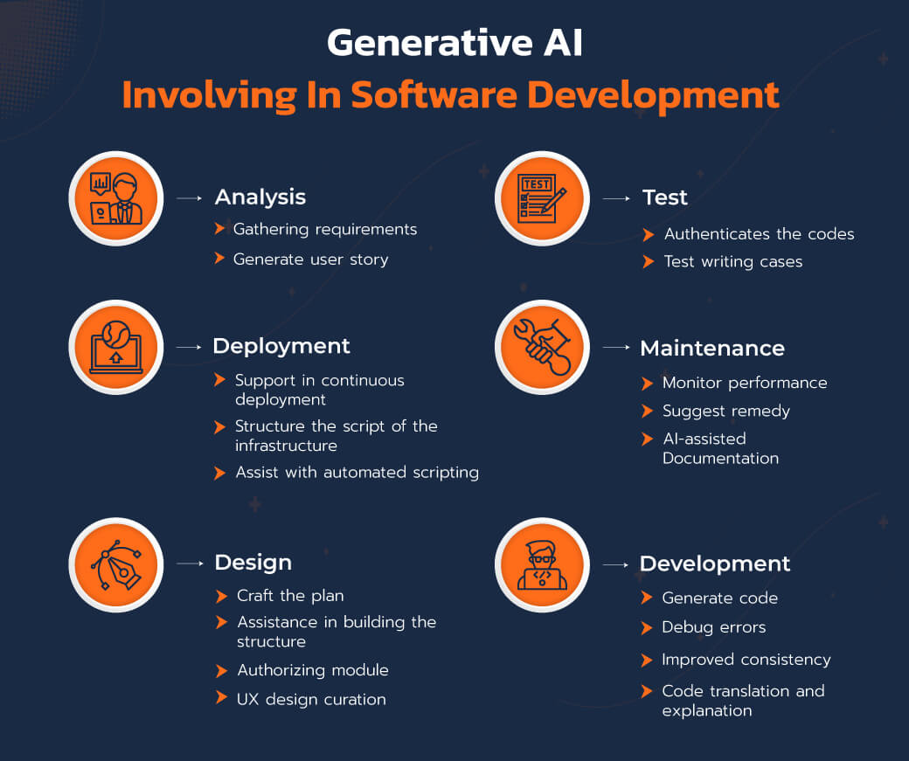
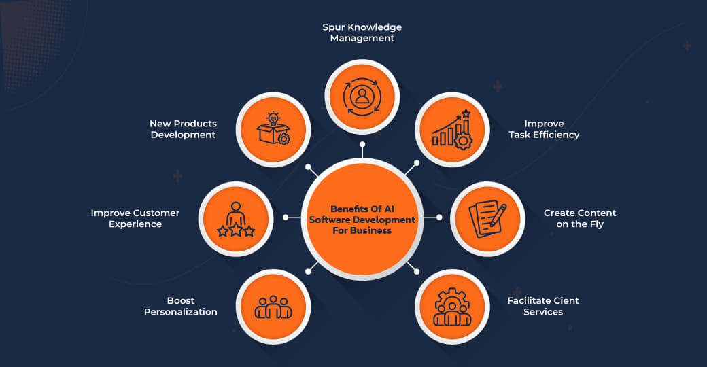

Generative AI is a subset of artificial intelligence that focuses on creating and generating new content. They are unique contents either text, image, music, or anything, which are unique, new, and copied from any existing spaces. They are processed from the data already fed. By training a model, making it understand the patterns, requirements, and structure the solutions are derived. Using that knowledge the system produces novel outputs that sync in style or content.
Techniques like neural networks, where layers of interconnected nodes process and transform data the Generative AI models are trained. Generative Adversarial Network (GAN), is a generative AI model with two distinct parts, a generator to create content and a discriminator that distinguishes between real and generated data. As the two are trained at the same time, they are capable of curating a convincing continent and at the same time getting feedback and working on progress.
Meanwhile, as technology keeps flourishing in every sector, and Generative AI gaining popularity among users, how about its importance in Software development? Unlike other sectors, Thai innovative space needs to be creative and unique. With a lot of questioning mulling over Generative AI transforming Software development workflow, this is a brief on its contribution.

How Generative AI Is Shaping Software Development Workflow?
Developers today are using AI-powered auto-compilation tools for programming projects. Undoubtedly DevOps will play a major role in artificial intelligence as a mature, interactive, and integrating tool in the future.
Maximizing Low Code Solutions.
Emphasizing the Software Development Kits (SDK) and LEADTOOLS, making it easy for developers and organizations helps in easy and open to bring AI into the applications. Generative AI also benefits other low-code developer tools and platforms. Thereby encouraging low experienced developers to quickly and efficiently curate and build products and solutions that are efficient. These solutions are designed with powerful features without any exponential or extensive coding knowledge. And this also eliminates the need for a wider bandwidth.
Generative AI Streamlining Cybersecurity
The rising remote work opportunities with the digital transformation are exposed to more security vulnerabilities. Generative AI being open to all, there are high chances of attacks and writing malicious codes. Meanwhile, AI here in software development can be utilized to monitor network traffic, identify suspicious patterns and behavior, and terminate their roots in the very initial stages, not letting them reach the crucial stages. Many companies, businesses, and brands are already on the scene effectively vitalizing AI and machine learning solutions to prevent threats.
Accelerating Remote Work Through Digital Transformation
The covid-19 lockdown not only put us all inside our houses but also spotlighted the opportunity to vitalize the Remote working system. Organizations and companies sooner adopted this trend, but the regulations were adopted after serious trial and error. Of course with very casual upgradation, this adaptation will continue, embracing developers with hybrid and remote working lifestyles and adopting and meeting the competitive software market. Generative AI focuses on repetitive tasks while humans (employees) can look up new creative innovations and other crucial tasks. Thereby improving productivity and efficiency in the operations. Also, this AI powers the systems to take care of activities elegantly, schedules and prioritizes tasks accordingly, and creates very transparency in remote work.
Increasing Effectiveness Of Generative AI Tool As Developers Use Them
Everyday AI tools become more effective through integration. Generative AI in Software development workflow is eased and aced. As the algorithm refines with more data and feedback in consistent flow into a matured technology. Every single accomplishment is a matter of appreciation as this technology is not mature but a continuously evolving one. When developers incorporate AI into the workflow the roles are shafted as the new technology embraces the team and not a new burden.
With new updates coming in every technology, the very next step of AI or Generative AI is to help scale smaller companies with larger outreach. Multiple opportunities open for these AI in software development make it easy to integrate with an exponential take.

What Are The Benefits of Deploying Generative AI In Software Development?
Innovate Products
Generative AI contributes a significant impact in the Software development phase with its ability to automate repetitive tasks. From curating boilerplate codes to writing documentation and test software, Generative AI contributes to every phase of development. They can innovate and suggest new solutions, design new features and abilities. Highly capable of solving complex problems with realistic solutions.
Improve Customer Reaction
Used to identify bugs, improve the software performance, and ensure software codes are secured, Generative AI aids in multiple ways. In terms of analyzing software, Generative AI contributes to the respective quality and standard. Improving better user experience, and reducing the cost of software development.
Faster Deployments
Generative AI in Software development, apart from automation and improving quality, accelerates the performance of the software. The generative prototype of new software helps developers get feedback, and work on it effortlessly. Therefore, ensuring the software solution reaches the market at a comparatively lower cost soon.
On the whole, Generative AI has proved its stand and importance in the software development lifecycle. In terms of automating functions, auditing code, contributing to quality, and performance, at a considerable time and cost. They have a vital role in the development and future of Software development.

Trending Generative AI Applications Contributing Software Development Lifecycle
The Google developed generative AI tool called AutoML tables is erected with the capability to generate code and build machine learning models from the tables. This tool contributes to SDLC and reduces the time and effort involved in the space, improving accuracy, performance, and capability
GitHub is developed by Microsoft which can automatically generate code from scratch. Based on the requirement. It’s more of a copilot with automatic code-generating capacity as per the prompts. It checks and authenticates codes, therefore reducing human errors and the time involved in solving them.
Einstein Discovery was developed by Salesforce, a generative AI tool with the capability to automatically suggest prompts from the data. It helps developers to make better decisions in terms of product development, marketing, and sales.
As the years passed Generative AI tools completely got into the SDLC space in full swing, where human intervention gradually reduced. With a lot of promises by generative AI, its achievements are impressive, there is a lot it could contribute to Software development. To explore and build such vital solutions, connect with us and invade the market.
CO-Founder
Yokesh Sankar, Co-Founder and Chief Operating Officer of Sparkout Tech Solutions, leverages his expertise to drive innovation and operational excellence in the software industry. Passionate about empowering individuals with essential skills, he uses technology to streamline business processes and enhance efficiency. He advocates for AI and blockchain adoption, helping businesses integrate these technologies seamlessly into their operations. Staying ahead of AI trends, Yokesh explores industry applications and shares insights to foster growth and knowledge in the tech sector.